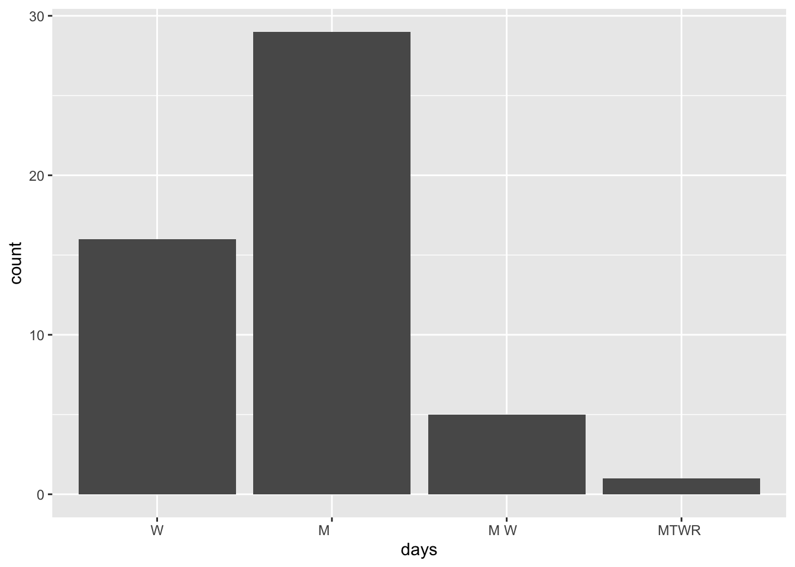

We’re in the last day of our “data preparation” unit:
18.2 Strings
In the previous class, we started discussing some considerations in working with special types of “categorical” variables: characters and factors which are:
Converting characters to factors (and factors to meaningful factors)–last time
When categorical information is stored as a character variable, the categories of interest might not be labeled or ordered in a meaningful way. We can fix that!
Strings–today!
When working with character strings, we might want to detect, replace, or extract certain patterns. For example, recall our data on courses:
Focusing on just the sem character variable, we might want to…
change FA to fall_ and SP to spring_
keep only courses taught in fall
split the variable into 2 new variables: semester (FA or SP) and year
Much more!–maybe in your projects or COMP/STAT 212
There are a lot of ways to process character variables. For example, we might have a variable that records the text for a sample of news articles. We might want to analyze things like the articles’ sentiments, word counts, typical word lengths, most common words, etc.
Exercise 1: Popular time slots
courses <-read.csv("https://mac-stat.github.io/data/registrar.csv")# Check it outhead(courses)
number crn name days
1 AMST 112-01 10318 Introduction to African American Literature M W F
2 AMST 194-01 10073 Introduction to Asian American Studies M W F
3 AMST 194-F1 10072 What’s After White Empire - And Is It Already Here? T R
4 AMST 203-01 10646 Politics and Inequality: The American Welfare State M W F
5 AMST 205-01 10842 Trans Theories and Politics T R
6 AMST 209-01 10474 Civil Rights in the United States W
time room instructor avail_max
1 9:40 - 10:40 am MAIN 009 Daylanne English 3 / 20
2 1:10 - 2:10 pm MUSIC 219 Jake Nagasawa -4 / 16
3 3:00 - 4:30 pm HUM 214 Karin Aguilar-San Juan 0 / 14
4 9:40 - 10:40 am CARN 305 Lesley Lavery 3 / 25
5 3:00 - 4:30 pm MAIN 009 Myrl Beam -2 / 20
6 7:00 - 10:00 pm MAIN 010 Walter Greason -1 / 15
# Construct a table that indicates the number of classes offered in each day/time slot# Print only the 6 most popular time slotscourses |>count(days, time) |>arrange(desc(n)) |>head()
days time n
1 M W F 10:50 - 11:50 am 76
2 T R 9:40 - 11:10 am 71
3 M W F 9:40 - 10:40 am 68
4 M W F 1:10 - 2:10 pm 66
5 T R 3:00 - 4:30 pm 62
6 T R 1:20 - 2:50 pm 59
dept number section crn name
1 AMST 112 01 10318 Introduction to African American Literature
2 AMST 194 01 10073 Introduction to Asian American Studies
3 AMST 194 F1 10072 What’s After White Empire - And Is It Already Here?
4 AMST 203 01 10646 Politics and Inequality: The American Welfare State
5 AMST 205 01 10842 Trans Theories and Politics
6 AMST 209 01 10474 Civil Rights in the United States
days time room instructor avail max enroll
1 M W F 9:40 - 10:40 am MAIN 009 Daylanne English 3 20 17
2 M W F 1:10 - 2:10 pm MUSIC 219 Jake Nagasawa -4 16 20
3 T R 3:00 - 4:30 pm HUM 214 Karin Aguilar-San Juan 0 14 14
4 M W F 9:40 - 10:40 am CARN 305 Lesley Lavery 3 25 22
5 T R 3:00 - 4:30 pm MAIN 009 Myrl Beam -2 20 22
6 W 7:00 - 10:00 pm MAIN 010 Walter Greason -1 15 16
Exercise 3: Courses offered by department
# Identify the 6 departments that offered the most sectionscourses_clean |>count(dept) |>arrange(desc(n)) |>head()
# Identify the 6 departments with the longest average course titlescourses_clean |>mutate(length =str_length(name)) |>group_by(dept) |>summarize(avg_length =mean(length)) |>arrange(desc(avg_length)) |>head()
dept number section crn name days time
1 STAT 253 01 10806 Statistical Machine Learning T R 9:40 - 11:10 am
2 STAT 253 02 10807 Statistical Machine Learning T R 1:20 - 2:50 pm
3 STAT 253 03 10808 Statistical Machine Learning T R 3:00 - 4:30 pm
room instructor avail max enroll
1 THEATR 206 Alicia Johnson -3 20 23
2 THEATR 206 Alicia Johnson -3 20 23
3 THEATR 206 Alicia Johnson 2 20 18
dept number section crn name
1 AMST 112 01 10318 Introduction to African American Literature
2 AMST 194 01 10073 Introduction to Asian American Studies
3 AMST 194 F1 10072 What’s After White Empire - And Is It Already Here?
4 AMST 203 01 10646 Politics and Inequality: The American Welfare State
5 AMST 205 01 10842 Trans Theories and Politics
6 AMST 209 01 10474 Civil Rights in the United States
days time room instructor avail max enroll
1 M W F 9:40 - 10:40 am MAIN 009 Daylanne English 3 20 17
2 M W F 1:10 - 2:10 pm MUSIC 219 Jake Nagasawa -4 16 20
3 T R 3:00 - 4:30 pm HUM 214 Karin Aguilar-San Juan 0 14 14
4 M W F 9:40 - 10:40 am CARN 305 Lesley Lavery 3 25 22
5 T R 3:00 - 4:30 pm MAIN 009 Myrl Beam -2 20 22
6 W 7:00 - 10:00 pm MAIN 010 Walter Greason -1 15 16
Optional extra practice
# Make a bar plot showing the number of night courses by day of the week.courses_clean |>filter(str_detect(time, "7:00")) |>ggplot(aes(x = days)) +geom_bar()

Source Code
---title: "ica-strings"editor: visual------title: "Strings"number-sections: trueexecute: warning: falsefig-env: 'figure'fig-pos: 'h'fig-align: centercode-fold: false---## Review**WHERE ARE WE?**We're in the *last day* of our "data preparation" unit:## StringsIn the previous class, we started discussing some considerations in working with special types of "categorical" variables: *characters* and *factors* which are:1. **Converting characters to factors (and factors to meaningful factors)**--last time\ When categorical information is stored as a *character* variable, the categories of interest might not be labeled or ordered in a meaningful way. We can fix that!2. **Strings**--today!\ When working with character strings, we might want to detect, replace, or extract certain *patterns*. For example, recall our data on `courses`:```{r echo = FALSE}library(tidyverse)courses_old <- read.csv("https://mac-stat.github.io/data/courses.csv")# Check out the datahead(courses_old)# Check out the structure of each variable# Many of these are characters!str(courses_old)```Focusing on just the `sem` character variable, we might want to...- change `FA` to `fall_` and `SP` to `spring_`- keep only courses taught in fall- split the variable into 2 new variables: `semester` (`FA` or `SP`) and `year`3. Much more!--maybe in your projects or COMP/STAT 212\ There are a lot of ways to process character variables. For example, we might have a variable that records the text for a sample of news articles. We might want to analyze things like the articles' *sentiments*, word counts, typical word lengths, most common words, etc.### Exercise 1: Popular time slots {.unnumbered}```{r}courses <-read.csv("https://mac-stat.github.io/data/registrar.csv")# Check it outhead(courses)# Construct a table that indicates the number of classes offered in each day/time slot# Print only the 6 most popular time slotscourses |>count(days, time) |>arrange(desc(n)) |>head()```### Exercise 2: Prep the data {.unnumbered}```{r}courses_clean <- courses |>separate(avail_max, c("avail", "max"), sep =" / ") |>mutate(enroll =as.numeric(max) -as.numeric(avail)) |>separate(number, c("dept", "number", "section"))head(courses_clean)```### Exercise 3: Courses offered by department {.unnumbered}```{r}# Identify the 6 departments that offered the most sectionscourses_clean |>count(dept) |>arrange(desc(n)) |>head()# Identify the 6 departments with the longest average course titlescourses_clean |>mutate(length =str_length(name)) |>group_by(dept) |>summarize(avg_length =mean(length)) |>arrange(desc(avg_length)) |>head()```### Exercise 4: STAT courses {.unnumbered}#### Part a {.unnumbered}```{r}courses_clean |>filter(str_detect(instructor, "Alicia Johnson")) ```#### Part b {.unnumbered}```{r}stat <- courses_clean |>filter(dept =="STAT") |>mutate(name =str_replace(name, "Introduction to ", "")) |>mutate(name =str_replace(name, "Statistical", "Stat")) |>mutate(start_time =str_sub(time, 1, 5)) |>select(number, name, start_time, enroll)statdim(stat)```### Exercise 5: More cleaning {.unnumbered}```{r}enrollments <- courses_clean |>filter(dept !="PE", dept !="INTD") |>filter(!(dept =="MUSI"&as.numeric(number) <100)) |>filter(!(dept =="THDA"&as.numeric(number) <100)) |>filter(!str_detect(section, "L"))head(enrollments)```### Optional extra practice {.unnumbered}```{r}# Make a bar plot showing the number of night courses by day of the week.courses_clean |>filter(str_detect(time, "7:00")) |>ggplot(aes(x = days)) +geom_bar()```